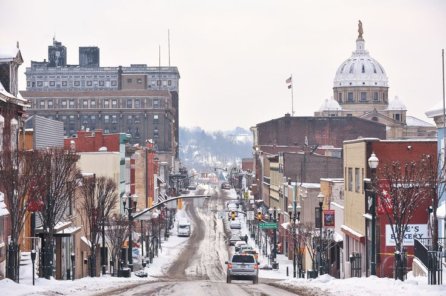
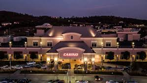
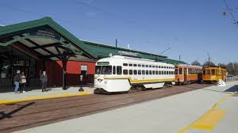
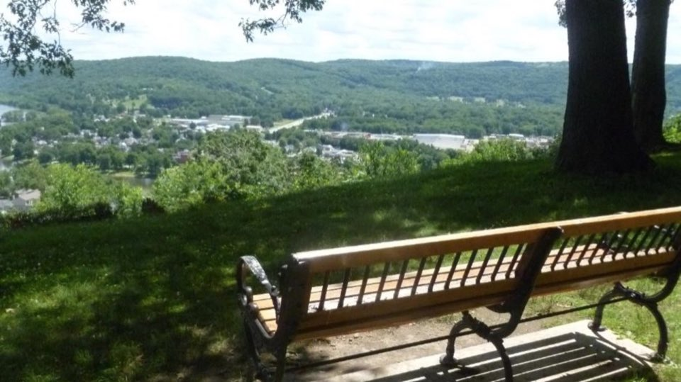

Downtown Washington
Walk the courthouse square, browse local storefronts, and leave room for a long lunch.
Source: City of Washington historyWashington, Pennsylvania
A local-first guide to Washington, PA—historic streets, easy family stops, good food, and a few places worth planning around.

A compact downtown with more to do than its size suggests.
Start here
Build your day around one major stop, then use downtown and the park for the time between.
Walk the courthouse square, browse local storefronts, and leave room for a long lunch.
Source: City of Washington historyOpen space, seasonal events, and a practical reset between downtown stops.
Source: City of WashingtonOne of the area’s strongest family stops, with enough depth to anchor a half-day.
Source: Pennsylvania Trolley MuseumA simple plan
The best first visit is not a checklist. Start with a major attraction, break for lunch, then choose one slower stop before dinner.
Coffee, courthouse square, and a short walk through the core.
Spend the late morning at the Trolley Museum or Washington Park, depending on the day.
Keep the middle of the day flexible; the best choice depends on events and timing.
Add a local event, a second museum stop, or a slower walk through the park.
Local context
Washington is one of the oldest settlements west of the Alleghenies. Its position on early transportation routes and role in the Whiskey Rebellion give the downtown more texture than a quick drive-through suggests.
Year Washington was incorporated as a borough.
Year the Whiskey Rebellion began in western Pennsylvania.
Year Washington became the county seat.
Make time for

Dining, racing, gaming, and concerts make this an easy evening anchor.
Source: Hollywood Casino at The Meadows
Historic cars, restoration work, and a ride that feels genuinely local.
Source: Pennsylvania Trolley Museum
A low-pressure option for a walk, a picnic, or a breather between scheduled stops.
Source: City of WashingtonPlan with less guesswork
Start with the headline attraction, then choose the rest based on weather, event timing, and whether your group wants a slower or fuller day.
A local perspective
This guide is designed around the kind of information that makes a short trip feel easier: what is worth booking, what fits together, and where you can leave space to wander.
About the guideReady to plan?